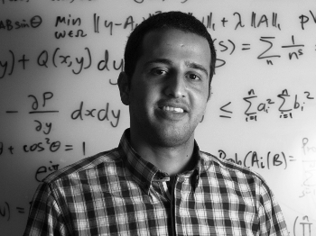

|
Mohammad Abu Alsheikh
|
 |
Associate Professor of Engineering and Data Privacy
IEEE Senior Member
ARC DECRA Fellow
University of Canberra, University Dr, Bruce, ACT, Australia 2617
I acknowledge the Ngunnawal people who are the traditional custodians of the land at which I live and work
Google Scholar | Scopus | Preprints |
LinkedIn |
GitHub
|
Bio
I am an Associate Professor and ARC DECRA Fellow at the University of Canberra, Australia. Before that, I was a Postdoctoral Researcher at the Massachusetts Institute of Technology (MIT), USA. I received a Ph.D. degree from Nanyang Technological University (NTU), Singapore, and a B.Eng. degree in computer systems from Birzeit University (BZU), Palestine.
Research
I am currently interested in privacy-preserving sensing technologies that comply with data privacy regulations. I design and create novel Internet of things systems that leverage machine learning and convex optimization with applications in people-centric sensing, human activity recognition, and smart cities.
Recent News
Selected Publications *
The following three papers provide a good overview of my research:
H. Alhazmi, A. Imran and M. Abu Alsheikh “How do socio-demographic patterns define digital privacy divide?,” in IEEE Access, vol. 10, pp. 11296-11307, January 2022 [IEEE Xplore][arXiv][paper]
M. Abu Alsheikh, D. T. Hoang, D. Niyato, D. Leong, P. Wang and Z. Han “Optimal pricing of Internet of Things: A machine learning approach,” in IEEE Journal on Selected Areas in Communications, vol. 38, no. 4, pp. 669-684, April 2020 [IEEE Xplore][arXiv][paper]
M. Abu Alsheikh, D. Niyato, D. Leong, P. Wang, and Z. Han, “Privacy management and optimal pricing in people-centric sensing,” in IEEE Journal on Selected Areas in Communications, vol. 35, no. 4, pp. 906-920, April 2017 [IEEE Xplore][arXiv][paper]
The full list can be found on Google Scholar.
Teaching
|